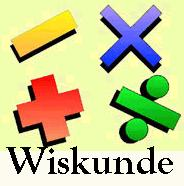
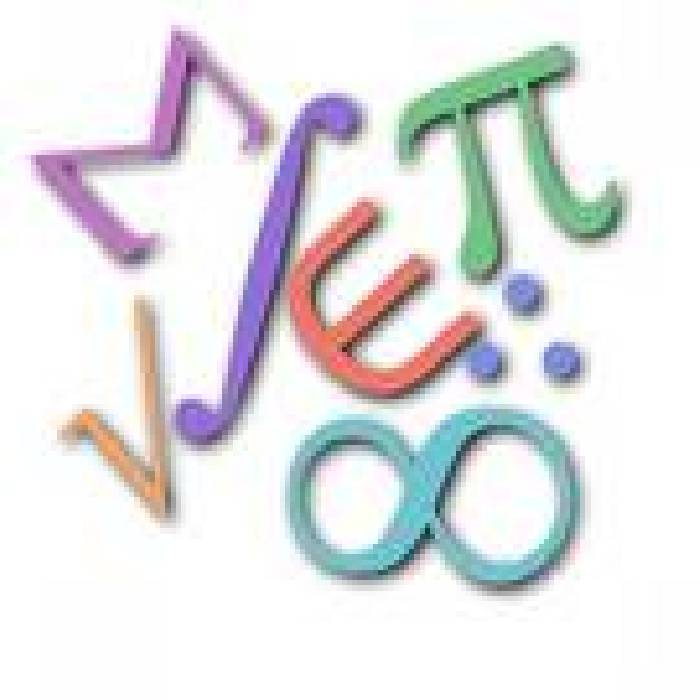
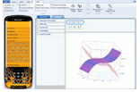
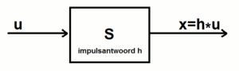
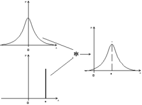
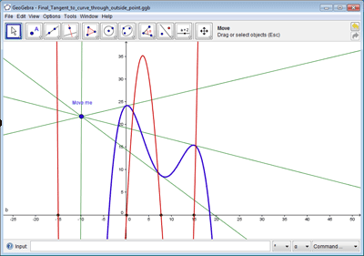
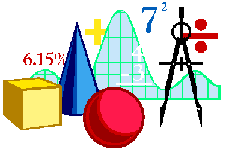

Wiskunde
Op deze pagina hebben we het over wiskunde programma's.
Vooral het programma 'R' is nodig in de opleiding. Andere programma's die in de opleiding gebruikt worden zijn Mathcad en Matlab, maar spijtig genoeg bestaan er daarvan geen echte freeware alternatieven. Scilab en Octave zou je kunnen gebruiken als alternatief voor Matlab, maar ze gebruiken beide een andere syntax (hetgeen het leren bemoeilijkt).
Microsoft Mathematics is een rekenmachine++, d.w.z. een rekenmachine met veel meer dan de 'normale' rekenmachinemogelijkheden.
De lokale kopies van de programma's kan je hier vinden.
Naam: R
Categorie: statistiek
Waardeoordeel: 5
Waardeoordeel op een schaal van 5 .. 1 (5='need to have', 3='good
to have', 1='nice to have')
Beschrijving: ter vervanging van het dure SPSS - info - ludit. Statistiek is een OPO (vak) van het tweede bachelorjaar. R wordt in het tweede bachelorjaar gebruikt.
Naam: Worlframalpha
Categorie: Wiskunde
Beschrijving: Wolframalpha is geen programma maar een website waar je berekeningen kan laten uitrekenen.
Naam: Microsoft Mathematics
Categorie: Wiskunde
Waardeoordeel: 3
Waardeoordeel op een schaal van 5 .. 1 (5='need to have', 3='good
to have', 1='nice to have')
Beschrijving: Mathematics is een zeer sterk uitgebreide rekenmachine. Indien nog niet geïnstalleerd, heb je ook dotnetfx nodig. Deze extra installatie loopt automatisch.
Naam: Scilab
Categorie: Wiskunde - systeemtheorie
Waardeoordeel: 3
Waardeoordeel op een schaal van 5 .. 1 (5='need to have', 3='good
to have', 1='nice to have')
Beschrijving: Scilab is een programma om volgende wiskundige problemen op te lossen: simulatie, 2-D & 3-D visualisatie, optimisatie, statistiek, controle theorie, ontwerp & analyse, signaal verwerking, applicatieontwerp. Het kan gebruikt worden als 'Matlab kloon', maar is er zeker niet aan gelijk. Scilab tutorial - introductie - discrete waarschijnlijkheden - optimalisatie - programmeren. Scilab is nuttig vanaf het derde bachelorjaar. Lijst met nuttige modules. Een speciale module is ADS_CoLiSyS. Dit is een GUI voor de analyse, ontwerp, simulatie en controle van een lineair systeem zowel in continue als discrete tijd. Het volstaat het bestand te 'unrarren' (met vb. 7zip), waarna je het gewoon kan openen in Scilab.
Naam: Octave
Categorie: Wiskunde - systeemtheorie
Waardeoordeel: 3
Waardeoordeel op een schaal van 5 .. 1 (5='need to have', 3='good
to have', 1='nice to have')
Download van internet Omdat er verschillende varianten van Octave bestaan (32 en 64 bit, voor 'large data', is het best de gewenste versie rechtstreeks van het internet te downloaden. De lokale kopie is een oudere lichtgewichtversie van slechts 70MB. De recente versies zijn pakweg 300MB groot.
Beschrijving: Octave is eveneens een Matlab kloon, maar mist ook belangrijke functies. Octave is nuttig vanaf het derde bachelorjaar.
Naam: Geogebra
Categorie: Wiskunde
Waardeoordeel: 2
Waardeoordeel op een schaal van 5 .. 1 (5='need to have', 3='good
to have', 1='nice to have')
Beschrijving: Geogebra combineert meetkunde en algebra met een interactief rekenblad.
Naam: SMath Studio
Categorie: Wiskunde
Waardeoordeel: 1
Waardeoordeel op een schaal van 5 .. 1 (5='need to have', 3='good
to have', 1='nice to have')
Beschrijving: SMath Studio is een lichtgewicht alternatief voor Mathcad. Je kan het gebruiken vanaf het eerste bachelorjaar. Het is mogelijk dat Microsoft .NET Framework nodig is voor het programma. Interessant aan de lokale kopie hierboven is dat het niet moet worden geïnstalleerd, je kan het programma gewoon starten. Je kan in de menustructuur als taal Nederlands kiezen. Afgeleiden, integralen, .. zijn symbolisch oplosbaar.